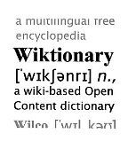
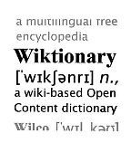
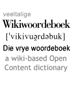

Welcome to the Kiwix-plug
Access freely to all the content of Wikipedia, Wikiversity, TED talks and even more... without any Internet connection.
In English...
 



In Afrikaans...

 Download the data to your own computer
Download the software for your own operating system:
Download the data to your own computer
Download the software for your own operating system: